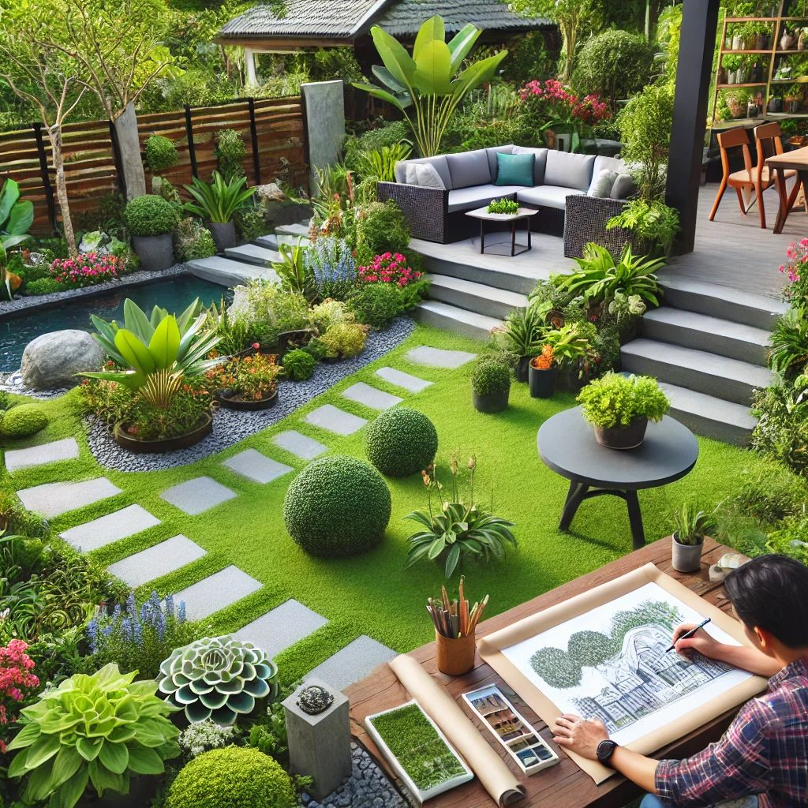

Conception de Jardin : Transformez Votre Espace Vert en Havre de Paix
Un jardin bien conçu est bien plus qu'un simple espace extérieur. C'est un lieu de détente, de convivialité et de bien-être, pensé pour s'intégrer harmonieusement à votre environnement et à votre mode de vie. Notre service de conception de jardin vous accompagne dans la création d'un espace unique, alliant esthétique, fonctionnalité et respect de la nature.
Une Conception Sur-Mesure
Chaque projet est unique, c'est pourquoi nous prenons en compte vos envies, la superficie disponible, le climat local et les spécificités de votre terrain. Que vous rêviez d'un jardin contemporain, d'un coin de verdure zen ou d'un espace luxuriant inspiré de la nature, nos experts paysagistes vous guideront à chaque étape du processus.
Une Approche Écoresponsable
Nous privilégions des solutions respectueuses de l'environnement en sélectionnant des plantes adaptées à votre sol et à votre climat, en optimisant l'arrosage et en favorisant des matériaux durables. Notre objectif : un jardin esthétique et facile à entretenir, tout en minimisant son impact écologique.
Un Accompagnement de A à Z
De l'esquisse initiale aux dernières plantations, nous vous offrons un suivi personnalisé pour concrétiser votre projet. Grâce à des plans détaillés et des modélisations 3D, vous pourrez visualiser votre futur jardin avant même sa réalisation. Faites confiance à notre savoir-faire pour donner vie à l'espace extérieur dont vous avez toujours rêvé.
Envie d'un jardin sur mesure ? Contactez-nous dès aujourd'hui pour une étude personnalisée de votre projet !